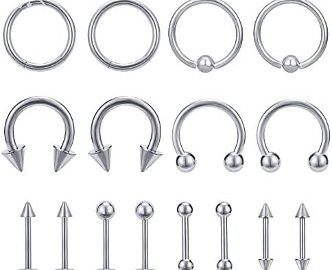

IMPORTANTE

1¿Qué pasa si utilizo un piercing de plata?
En el caso de la plata los especialistas no recomiendan usarla para este tipo de perforaciones ya que el riesgo de infecciones es mayor, retrasa el proceso de cicatrización y tiende a volverse negra con el paso del tiempo.
2Precaución
Tanto el oro como la plata son los materiales por excelencia para cualquier tipo de joya y, por supuesto, los piercings no podían ser menos. Al igual que el titanio y el acero son antibacterianos pero el oro y la plata son más moldeables.
Tipos de piercing

PIERCING LÓBULO
Es el piercing más común y se realiza en la parte blanda del lóbulo de la oreja.

PIERCING TRAGUS
Se encuentra en el pequeño cartílago que sobresale frente al canal auditivo.

PIERCING HÉLIX
Es el piercing que se realiza en la parte superior del cartílago de la oreja.